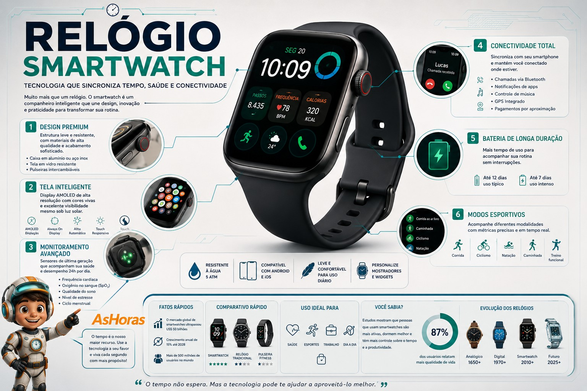

Smartwatch: o relógio que virou computador de pulso
Nascido da fusão entre relojoaria e tecnologia mobile, o smartwatch trocou engrenagens por sensores e transformou o pulso em um painel de controle da sua saúde e das suas notificações.
O que é um smartwatch?
Um smartwatch é um relógio de pulso com processador, tela e conexão sem fio próprios, capaz de rodar aplicativos, se conectar ao smartphone e coletar dados do corpo em tempo real. Diferente dos relógios tradicionais, ele não mede apenas o tempo — mede passos, batimentos, sono e muito mais, entregando essas informações em gráficos direto no pulso.
Tipos de smartwatch
Nem todo smartwatch é igual — cada perfil de uso tem um tipo mais indicado, e conhecer as diferenças ajuda a escolher melhor.
O que um smartwatch monitora
Certificações que você vai encontrar
Como escolher o smartwatch ideal
Prós e contras
Vantagens
- Acompanha saúde e atividade física em tempo real
- Recebe notificações sem precisar tirar o celular do bolso
- Atualiza funções via software, sem trocar de aparelho
Desvantagens
- Precisa ser recarregado com frequência
- Fica obsoleto mais rápido que um relógio tradicional
- Depende do smartphone para boa parte das funções
A ideia de um relógio "inteligente" é mais antiga do que parece: já em 1984 a Seiko lançou o Data 2000, capaz de armazenar anotações. Mas foi só com o avanço dos sensores e das baterias, décadas depois, que o smartwatch se tornou o companheiro de saúde que conhecemos hoje.
Visão 3D: seu smartwatch por dentro

Evolução do smartwatch
Pulsar
Primeiro relógio digital eletrônico do mundo, abrindo caminho para telas em relógios de pulso.
Seiko Data 2000
Um dos primeiros relógios capazes de armazenar anotações e dados simples.
Timex Datalink
Sincronizava compromissos direto da tela do computador usando pulsos de luz.
Explosão dos apps
Modelos com notificações, apps de terceiros e app stores próprias chegam ao mercado.
Saúde preventiva
ECG, oxímetro e monitoramento avançado de sono viram foco central dos lançamentos.
Autonomia por perfil de uso
Perguntas frequentes
Smartwatch substitui o celular?
Não totalmente. Ele complementa o smartphone, mostrando notificações e coletando dados de saúde, mas a maioria depende da conexão com o celular para funções completas.
Preciso trocar a pulseira original?
Não é obrigatório, mas muitos modelos aceitam pulseiras intercambiáveis, o que ajuda a adaptar o relógio para treino, trabalho ou ocasiões formais.
Smartwatch funciona sem internet?
Funções básicas como hora, cronômetro e sensores de saúde continuam ativas offline. Notificações e sincronização de apps precisam de conexão.
Vale a pena para quem não pratica esportes?
Sim — recursos como notificações, lembretes de movimento e monitoramento básico de sono já fazem diferença no dia a dia, mesmo sem rotina esportiva.
Referências e leituras complementares
Este conteúdo foi baseado em fontes públicas sobre a história e o funcionamento dos smartwatches. Para se aprofundar, vale a leitura: